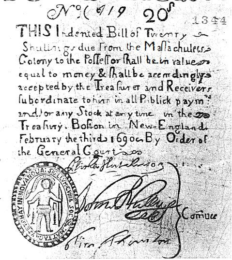

Parasal mübadelenin ilkel biçimlerini betimlemeyi sona erdirmek mümkün değildir. Görüntüler çok sayıdadır ve onları tasnif etmek gerekmektedir. Bundan da fazlası, tam para ile (eğer varsa), tam olmayan paranın diyalogu, sorunlarımızı köklerine kadar aydınlatmaktadır. Tarih eğer açıklamaysa, burada görevini tam yapmalıdır. Bazı hatalardan kaçınma koşuluyla: tamlığın ve eksikliğin yan yana olamayacaklarına, fırsat çıktıklarında karışmayacaklarına; bu iki sicilin tek ve aynı sorunu meydana getirmediğine; her mübadelenin zorunlu olarak, voltaj farkları sayesinde yaşamadığına (bugün bile) inanmamak. Para aynı zamanda, kendi evinde ve dışarıda başkalarını sömürmenin, oyunu hızlandırmanın bir biçimidir.
XVIII. yüzyılda bile, dünyanın “senkronik” bir görünüşü, bunu kesinlikle kanıtlamaktadır. Muazzam mekânlar üzerinde, milyonlarca insan için, Akileus'un kalkanının sığır cinsinden ölçüldüğü Homeros çağındayız. Adam Smith bu imgeyle düş kurmuştur. Şöyle yazmaktadır: “Homeros'a göre Diomedes'in zırhı yalnızca 9 öküz etmişti, fakat Glaucos'unki 100 öküz etmekteydi”. Bu basit insan alemleri, bugün bir iktisatçının üçüncü dünya diyeceği şeydir; her zaman bir üçüncü dünya olmuştur. Bu dünyanın sürekli hatası, onun için her zaman aleyhte olan diyaloga girmiş olmasıdır. Ama gerektiğinde buna mecbur bırakılmaktadır.
Mallar değişime girer girmez, hemen paranın mırıldanmaları duyulmaktadır. Daha fazla arzulanan veya daha bol olan bir mal, para, değişimlerin kıstası rolünü oynamakta, oynamaya çabalamaktadır. Örneğin tuz, Yukarı Senegal ile Yukarı Nijer krallıklarında ve 1620'de yazan bir Fransıza göre “bir parmak uzunluğunda, kaya kristalleri gibi traşlanan” tuz küplerinin bulunduğu Habeşistan'da, ayırım yapmadan hem para, hem de gıda olarak hizmet vermiştir, “öylesine ki, haklı olarak, onların paralarını yedikleri söylenebilir”. Temkinli bir Fransız hemen haykırmaktadır: “bütün (ödeme) araçlarını bir gün erimiş veya su haline gelmiş olarak bulmaları” ne büyük tehlikedir! Pamuklu bezler Monomotapa sahilleri ve Gine körfezi kıyılarında aynı rolü oynamaktadırlar. Gine körfezinde, köle ticaretinde, bir kişinin fiyatını, sonra da bizzat bu kişiyi belirtmek üzere, bu kişinin fiyatının karşılığı olan (Hind) pamuklularının miktarını gösteren “Hind parçası”ndan söz edilecektir. Kısa bir süre sonra uzmanlar, “Hind parçası”nın 15-40 yaşları arasındaki köle anlamına geldiğini söyleyeceklerdir.
Gene bu Afrika kıyısında, manille denilen bakır bilezikler, ağırlık hesabı toz altın, atlar da paradır. Peder Labat (1728), zencilere satılan şahane Kuzey Afrika atlarından söz etmektedir. “Bunların tanesine 15 köle veriyorlar. İşte oldukça eğlenceli bir para, ama her ülkenin kendi modaları var” diye yazmaktadır. İngiliz tüccarlar rakiplerini yok etmek üzere, XVIII. yüzyılın ilk yıllarında, başa çıkılmaz bir tarife getirmişlerdir: “Hind parçası köleyi dört ons altına veya otuz guruşa (gümüş) veya üç çeyrek libre mercana veya yedi parça İskoç bezine getirmişlerdir”. Ancak, iç kesimlerdeki bir zenci köyünde, “o kadar yağlı ve yumuşaklar ki, başka ülkelerin besili horozlarına ve semiz tavuklarına taş çıkartıyor” diye anlatılan tavuklar o kadar çok sayıdadırlar ki, fiyatları bir kağıt yaprağa bir tavuktur.
Afrika kıyılarının diğer paraları, en çok bilinenleri Kongo kıyılarının zimboları ile caurileri olan, irili ufaklı ve çeşitli renklerdeki deniz kabuklarıdır. Bir Portekizli 1619'da, "zimbolar, bazı çok küçük deniz sümüklü böcekleridir ve kendileri ne bir değere, ne de yarara sahiptir. Eski barbarlık, şimdiye kadar kullanılan bu parayı ortaya çıkartmıştır” diye yazmaktadır. Ve zaten bugün, XX. yüzyılda bile bu paralar kullanılmaya devam etmektedirler! Cauriler de, kırmızı çizgileri olan mavi deniz kabuklarıdır ve bunlardan tespih yapılmaktadır. Hind Okyanusunun kayıp adaları Maldivler ve Laquedivlerde, koskoca gemiler tüm yük olarak bunlarla doldurulmakta ve Afrika, Kuzeydoğu Hindistan ile Birmanya'ya gönderilmekteydiler. Hollanda, bilinçli olarak yeniden kullanmak üzere, XVI. yüzyılda Amsterdam'a bunlardan ithal etmekteydi. Cauriler eskiden Çin'de, Budizmin bu ülkeyi kendi inancına fethetmek için kullandığı yollar üzerinde tedavül etmiştir. Caurilerin eski bir Çin parası olan sapeklerin karşısındaki gerilemeleri de zaten tam olmamıştır, çünkü odun ve bakır ülkesi olan Yunnan, 1800'lere kadar onu kendi hesabına muhafaza edecektir. Yakınlarda yapılan araştırmalar, bu ülkede geç tarihlerde, cauri cinsinden yapılan kira ve satış sözleşmelerini işaret etmektedirler.
Daha az garip olmayan bir para da, dün kraliçe Elizabeth ve Edinburg dükü Philippe'e Afrika'da refakat eden gazetecilerden birinin şaşkınlıkla keşfettiğidir: “Nijerya içlerinin yerlileri hayvanları, silahları, tarımsal ürünleri, kumaşları, hatta kadınları Majesteleri Britanya kraliçesinin sterlinleriyle değil de, Avrupa'da basılan (daha doğrusu imal edilen) garip mercan paralarla satın almaktadırlar. Bu paralar... İtalya'da doğmuşlar, burada onlara olivette adı verilmiştir. Bunlar özellikle Toskana'da, bugüne kadar ayakta kalan bir Livorno mercanı atelyesinde imal edilmişlerdir” diye yazmaktadır. Ortalarından delinmiş, silindir biçimli ve dış yüzeyleri yivli mercanlar olan olivette'ler Nijerya, Sierra Leone, Fildişi Kıyısı, Liberya, hatta daha uzaklarda tedavül etmektedirler. Afrikalı alıcı, bunları kemerinde ipe geçirilmiş ve sarılı olarak taşımaktadır. Herkes de visu onun zenginliğini tayin edebilir. Behanzin 1902'de, tasnif dışı bir olivette'yi 1000 sterline satın almıştır; bu parça 1 kg. gelmekteydi ve harika bir boyası vardı.
Fakat bu umulmadık paraların tüketici bir listesini çıkartmak mümkün değildir. Bunlar heryerde pusuya yatmışlardır. 1413 ve 1426 kararnamelerinden sonra İzlanda, kurutulmuş balık cinsinden ödenebilecek ve yüzyıllar boyunca geçerli olacak narhlar saptamıştı (bir nal için bir, bir çift kadın ayakkabısı için üç; bir fıçı şarap için yüz; bir varil tereyağ için yüz yirmi balık vb.). Alaska veya Büyük Petro Rusya'sında, bu rol kürke düşmekteydi: bazen söz konusu olanlar, çarın askeri mutemetlerinin kasalarında yer bırakmayan, basit kare kürklerdi. Fakat Sibirya'da vergi değerli ve ticari kürkler cinsinden tahsil edilmekteydi ve çar, başta memurlarına olmak üzere, bir çok ödemesini “mal cinsinden” kürk olarak yapmaktaydı. Koloni Amerika'sında bölgesine göre tütün, şeker, kakao para yerine geçmekteydi. Kuzey Amerika kızılderilileri, ipe geçirilmiş beyaz veya mor, silindir biçiminde traş edilmiş deniz kabukları kullanmaktaydılar: bunlar, Avrupalı göçmenlerin 1670'e kadar yasal olarak kullanmaya devam edecekleri, ve fiili olarak, en azından 1725'e kadar sürecek olan wampum'lardır. Aynı şekilde, XVI. ile XVIII. yüzyıllar arasında, geniş anlamdaki Kongo (Angola da dahil), bir dizi pazar ile faal mübadele ağının uyanışına tanık olmuştu, bu pazar ve mübadele ağları hiç kuşkusuz, çoğu zaman ülkenin iyice içlerine yerleşmiş olan beyazların, acentelerinin (pombeiros) takas ticaretinin işine yaramaktadırlar. Buralarda para benzerleri tedavül etmektedir. Zimbo'lar; kumaş parçaları. Kabuklar değer sırasına sokulmuştur: bir ölçü eleği, büyükleri küçüklerinden ayırmaktadır (1 büyük = 10 küçük). Para-kumaşlara gelince, bunlar büyüklük farklarını göstermektedirler, lubungo bir kâğıt tabakası, mpusu bir peçete büyüklüğündedir.
Olağan olarak onlu gruplar halinde olan bu paralar, demek ki madeni paralar gibi, üst ve alt dilimleriyle bir değer skalası meydana getirmektedirler. Öylesine ki, büyük tutarlar seferber edilebilmektedir. 1649'da Kongo kralı, yaklaşık olarak 40 milyon Portekiz reis'i eden, 1.500 yük kumaşı biraraya getirmiştir.
Avrupa etkisinden sonra, bu paraların kaderinin izlenmesinin mümkün olduğu her seferinde (ister Bengal'deki cauri'ler, 1670'ten sonra wampum'lar, isterse Kongo zimbo'ları söz konusu olan), evrim aynı olmaktadır: stoklardaki bir artıştan, hızlanan, hatta çıldıran bir tedavülden ve Avrupa'nın egemen paralarının karşısındaki bir devalüasyondan ötürü, devasa, afet gibi enflasyonların içine düşülmektedir. Hatta buna, ilkel “kalp para” da katılmaktadır! XIX. yüzyılda Avrupa atelyeleri tarafından, cam hamurundan imal edilen kalp wampum'lar, eski paranın tamamen yokolmasına yol açmışlardır. En uyanıklar Portekizlilerdir. 1650'lere doğru, Loanda adası kıyılarındaki “para balıkhanelerimi (yani zimbo) ellerine geçirmişlerdir. Oysa, bu para 1575-1650 arasında l'e 10 değer kaybetmiştir bile.
Bütün bunlardan, ilkel paranın gerçekten bir para olduğu zaman, onun tüm eda ve adetlerine sahip olduğu sonucu çıkartılabilir. Bu paraların uğradıkları büyük değişiklikler, Avrupalıların dünyanın yedi denizlerinde zuhur etmelerinin işareti olduğu, ilkel ekonomilerle ileri ekonomiler arasındaki şokun tarihini özetlemektedirler.
Daha az bilinen, adeta bunlar kadar eşitsiz ilişkilerin, bizzat “uygar” ülkelerin içlerinde de sürdüğüdür. Parasal ekonomilerin oldukça ince olan derilerinin altında, ilkel faaliyetler, örneğin kent pazarlarındaki buluşmalarda veya ondan hiç de daha az olmamak üzere, fuarların gürültülü patırtılı forcing'lerinde olduğu gibi, diğerlerine karışmış, onların saldırısına uğramış bir şekilde varlıklarını sürdürmektedirler. Avrupa'nın göbeğinde, ilkel ekonomiler, onları yoketmeyen, onları daha çok elinin ulaşabildiği yerdeki sömürgeler olarak tutan parasal hayat tarafından çevrelenmiş olarak, yaşamaya devam etmektedirler. Adam Smith (1775) “fırıncıda veya biracıda, bir işçinin para yerine çivi verdiğini görmenin nadir olmadığı” bir İskoç köyünden söz etmektedir. Aynı döneme doğru, Katalan Pirenelerinin bazı soyutlanmış kısımlarında, köylüler dükkâna, alışverişlerini ödeyebilmek üzere, küçük tahıl torbalarıyla gitmektedirler. Fakat daha da geç tarihli ve ikna edici örnekler de bulunmaktadır. Etnografların tanıklıklarına göre, Korsika ancak 1. Dünya savaşından sonra, gerçekten etkin bir parasal ekonominin alanı haline gelebilmiştir. Bu dönüşüm, “Fransız” Cezayir'inin bazı dağlık kesimlerinde, II. Dünya savaşından önce ortaya çıkamamıştır. Bu, 1930 civarındaki Aures'e bağlı olan alt dramlardan biridir, ve bu dram. Doğu Avrupa'ya doğru sayılamayacak kadar çok kapalı dünyanın içindeki kırsal veya dağlık bucakların, veya Amerika'nın batısına doğru, bu gibi kesimlerin, kronolojik uzaklığa rağmen çok rahatlıkla kıyaslanabilir bir şekilde, para düzeninin modernliğinin çok farklı tarihlerde ulaşmasına göre yaşanan dramları hayal etmemize olanak sağlamaktadır.
Bir XVII. yüzyıl seyyahı olan François La Boullaye, Kafkaslarda, Kafkas dağlarıyla Karadeniz arasında kalan bölgede “sikke halinde paranın geçmediği”ni aktarmaktadır. Burada yalnızca takas yapılmakta ve Mingrelia hükümdarının Osmanlı padişahına her yıl gönderdiği vergi “bezler ve köleler”den meydana gelmektedir. Bu vergiyi İstanbul'a götürmekle görevli elçinin özel bir sorunu vardır: Osmanlı başkentindeki ikâmet masraflarını nasıl ödeyecektir? Gerçekten de, maiyeti otuz veya kırk köleden oluşmakta, bunları yol boyunca sırayla satmaktadır; La Boullaye ancak çaresizlik halinde ayrıldığı kâtibi hariç diye eklemektedir. Sonra “ülkesine yalnız başına dönmektedir”.
Rus örneği de anlam yüklüdür. Novgorod'da, XV. yüzyılın başında “hâlâ sansar derisinden parçalar, damgalanmış deri parçalarından meydana gelen küçük Tatar paralarından başka bir şey kullanılmıyordu. Para basmaya ancak 1425'te başlanabildi, bunlar çok kaba gümüş sikkelerdi. Ve üstelik Novgorod, mübadelelerin uzun zaman ayni olarak yapıldığı Rus ekonomisine nazaran ilerideydi”. Düzenli olarak para basılması için XVI. yüzyılı, Alman paralarının ve külçelerinin (çünkü Rus ticaret bilançosu pozitiftir) gelmesini beklemek gerekmektedir. Zaten bu iş mütevazi boyutlarda olmuş ve para basımı çoğunlukla özel sektöre ait bir iş olarak kalmıştır. Takas muazzam boyutlardaki ülkenin şurasında veya burasında tutunmaktadır. Ancak Büyük Petro'nun döneminde, o zamana kadar soyutlanmış olan bölgeler birbirleriyle temasa sokulmuştur. Rusya'nın Batı'ya nazaran gecikmişliği inkâr edilemez: Sibirya'nın belirleyici altın kaynakları, ancak 1820'lerden itibaren, gerçekten devreye sokulabilecektir.
Sömürge Amerika'sı da yüksek derecede anlam yüklü bir gösteri sunmaktadır. Parasal ekonomi burada, yalnızca maden ülkelerinin -Meksika, Peru- büyük kentlerine ve Avrupa'ya yakın bölgelere, Antillere ve Brezilya'ya (burası kısa bir süre sonra, altın madenlerinin sayesinde ayrıcalıklı hale gelecektir) ulaşabilmiştir. Buraları tamamlanmış parasal ekonomilerin uzağındadırlar, ama buralarda fiyatlar, daha şimdiden ekonomik bir olgunluğun işareti olarak dalgalanmaktadırlar, oysa fiyatlar ne Arjantin'de, ne de Şili'de (ki bu ülke bakır ve gümüş üretmektedir) dalgalanmıştır; fiyatlar buralarda dikkat çekici bir sabitliktedir, bunlara ölü-doğmuş denilebilir. Tüm Amerikan kıtasında sıklıkla mallar mallarla mübadele edilmektedirler. Sömürge yönetimlerinin feodal veya yarı-feodal tavizleri, nakit para kıtlığının bir işaretidir. Demek ki tam olmayan paralar, doğal olarak rollerini oynamaktadırlar: Şili'de bakır parçaları, Virginia'da tütün, Fransız Kanada'sında “iskambilden para”, Yeni İspanya'da tlacos. Bu tlacos (bir Meksika kelimesinden), bir riyalin sekizde biri olarak hesaplanmaktadır. Bunlar perakendeciler tarafından; ekmek ve alkolden, Çin ipeklilerine kadar her şeyin satıldığı şu mestizas denilen dükkânların sahipleri tarafından yaratılmışlardır. Bu dükkânların herbiri, kendi damgasını taşıyan tahtadan, kurşundan, bakırdan, alt birim paralar çıkartmaktadır. Fırsat çıktığında, bu jetonlar gerçek gümüş paralarla değiştirilmekte ve küçük bir topluluk içinde tedavül etmektedir: bir kısmı kaybolmakta, hepsi de, bazen iğrenç olan, spekülasyona sokulmaktadır. Bunun böyle olmasının nedeni, gümüş paraların yalnızca büyük birimlere sahip olması ve gerçekte bunların, küçük insanların ulaşamayacakları yüksekliklerde bulunmalarıdır. Bunun dışında, İspanya'ya giden her filo, ülkenin beyaz madenlerini boşaltmaktadır. Nihayet, 1542'de bakır bir para yaratma girişimi başarısız olmuştur. Bu durumda sakat bir sistemle, adeta ilkel bir parayla yetinmek zorunda kalınmaktadır. Bu XIV. yüzyıl Fransa'sının başına gelen şey değil midir? İyi Jean için ödenen kurtarmalık, ülkenin nakit kaynağının tükenmesine yetmiştir. Bu durumda kral, birkaç yıl sonra geri alacağı, deri bir para bastırmıştır!
Kurtuluşlarından önce olduğu gibi, sonra da Amerikan sömürgelerinde aynı güçlük söz konusudur. Madera'ya yerleşmiş bir arkadaşına, Philadelphialı bir tüccar 1721 Kasımında yazdığı mektupta, “biraz buğday yollamaya niyetliydim, ama borç verenler o kadar tereddütlü ve para da o kadar kıt ki, paranın ender olduğu geçmiş günleri bile arıyoruz, bir ödeme aracı olmazsa, ticaret ne yapılacağı bilinemez bir faaliyet haline geliyor” demektedir. Gündelik mübadeleler için bu “ne yapacağını bilememe” durumundan kaçınmaya çalışılmaktadır. Fransız devriminin çok ünlü kişileri Claviere ve Brissot, 1791'de yazdıkları, A.B.D.'ye ilişkin kitaplarında, takasın aşırı yaygınlığını kaydetmişlerdir. Hayranlıkla söylediklerine göre “kırlarda ihtiyaçlar, hep aynı elden çıkan ve oraya geri dönen paranın yerine, karşılıklı olarak doğrudan değişimlerle karşılanmaktadır. Terzi, ayakkabıcı, onlara ihtiyacı olan çiftçinin evinde sanatlarını icra etmekte, o da onların işlerini çoğu zaman ürün cinsinden ödemektedir.

Yeni İngiltere'de, Massachusetts kolonisi tarafından 3 Şubat 1690'da çıkartılmış olan senet. Bana kopyasını sunma nezaketini gösteren, Montreal'deki Molson firması arşivlerinde bulunmaktadır.
Bu cins mübadeleler birçok alana yayılmaktadır; biryerlere ne alındığı ve verildiği yazılmakta, ve yıl sonunda, çok büyük çeşitlilikte olan ve Avrupa'da ancak çok parayla yapılabilecek mübadeleler, çok küçük miktardaki bir nakitle kapatılmaktadır...”.
Takasın ve mal cinsinden hizmetlerin, genç Amerika'nın ilerlemeci bir özgünlüğü olarak bu methedilişi oldukça eğlendiricidir. XVII. yüzyılda ve hatta XVIII. yüzyılda bile, Avrupa'da ayni ödemeler, kural olduklan bir geçmişin kalıntıları olarak oldukça sık görülmektedirler. Alfons Dopsch'u izleyerek, kendilerine mal, yiyecek, tuz, kumaş, pirinç tel, tahıl cinsinden, hepsi de aşırı tarifelerden fiyatlandırılan ürünlerle ödeme yapılan şu Solingenli bıçakçılar, Pforzheimlı şu madenciler, dokumacılar, Karaorman'daki şu köylü saatçileri sayıp dökmek, bitecek gibi bir iş değildir. Bu, XV. yüzyılda Almanya kadar, Hollanda, İngiltere, Fransa'nın da iyi bildiği Trucksystem'dir (yani takas). Hatta, Alman imparatorluk “memurları” bile ve tabii belediye memurları kaçınılmaz olarak, ücretlerinin bir kısmını mal cinsinden almaktadırlar. Ve geçen yüzyılda, kendilerine kümes hayvanı, tereyağ, buğday cinsinden ödeme yapılan ne kadar da çok ilkokul öğretmeni vardır! Hind köyleri de zenaatkârlarına her zaman (bunlar meslek kastları içinde, babadan oğula sürmektedir) yiyecek maddesi cinsinden ödeme yapmışlardır ve baratto (takas), XV. yüzyılda Doğu Akdeniz iskelelerinde, bu işin mümkün olduğu her seferinde, tüm büyük tüccarların altın kuralı olmuştur. XVI. yüzyılın kredi uzmanları olan Cenevizliler, herhalde bu takas geleneğinin izinden giderek, tüm Avrupa'nın kambiyo mektuplarının hesap bakiyelerinin kapatıldığı, kavramın kendisinin ortaya çıkmasından önce de gerçek clearing'ler olan, Besançon fuarları denilen, takas fuarlarını düşünmüşlerdir. Bir Venedikli 1604'te, bu fuarların merkezi olan Piacenza'da, sonunda ortaya yalnızca birkaç avuç “altından altın” -yani efektif para- ekünün çıkmasıyla değiştirilen milyonlarca dükalık hesap karşısında apışıp kalmıştır.